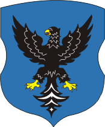
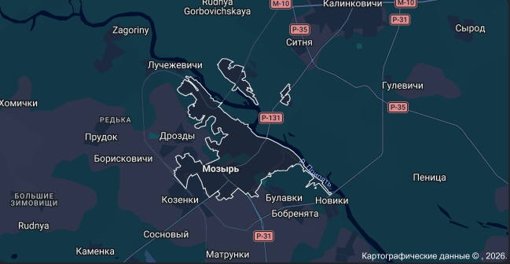

История, достопримечательности, символы и современная жизнь города
Мозырь — один из древнейших городов Беларуси, расположенный на юго-востоке страны, на берегу реки Припять. Первые письменные упоминания о городе относятся к 1155 году.
Благодаря своему расположению на важных торговых путях Мозырь на протяжении своей истории имел большое экономическое и стратегическое значение. Город неоднократно менял свой политический статус и входил в состав различных государств.
В разные периоды Мозырь развивался как торговый и ремесленный центр Полесья. Современный город является одним из наиболее значимых промышленных и культурных центров Гомельской области.
Мозырь известен своей богатой историей и необычным для равнинной Беларуси рельефом. В городе и его окрестностях можно увидеть множество интересных мест.
Герб является одним из главных официальных символов Мозыря. Он отражает исторические особенности города и его значение в истории Полесья.

Флаг Мозыря является официальным символом города и используется во время городских мероприятий и официальных церемоний.
Мозырь расположен в юго-восточной части Беларуси, в Гомельской области, на реке Припять.

Карта Мозыря и его окрестностей
В Мозыре регулярно проходят культурные, спортивные и общественные мероприятия. В городе проводятся различные фестивали, концерты, выставки и спортивные соревнования.
Актуальные новости рекомендуется обновлять перед сдачей работы.
Сегодня Мозырь является крупным промышленным центром Гомельской области. Значительную роль в экономике города играют промышленность, транспорт, торговля и сфера услуг.
Одним из наиболее известных предприятий города является Мозырский нефтеперерабатывающий завод. Предприятие играет заметную роль в промышленности города и региона.
В городе также работают учреждения образования, медицинские организации, магазины, предприятия общественного питания, спортивные и культурные учреждения.
Мозырь называют одним из интересных городов Полесья благодаря его истории, природе и необычному рельефу.
Для меня Мозырь — это не просто точка на карте. Это город с собственной историей, природой и особой атмосферой. Здесь сочетаются промышленный облик современного города, старинные места и природа Полесья.
Мозырь — город с историей, характером и будущим!